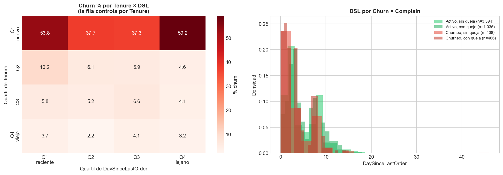
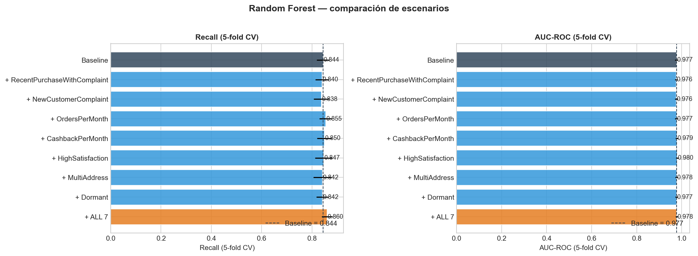
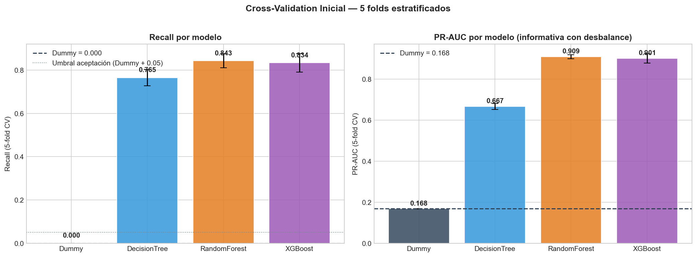
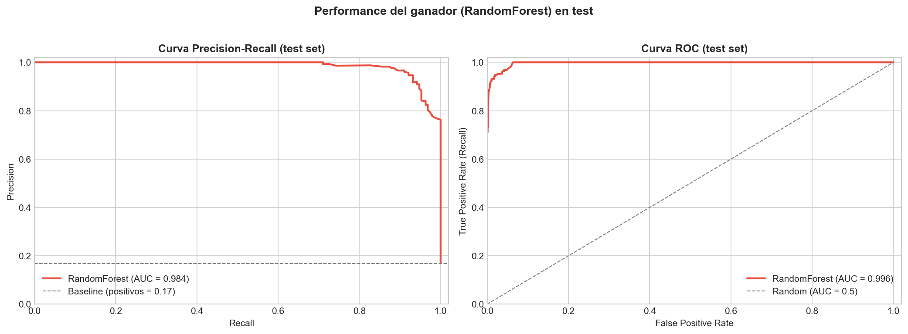
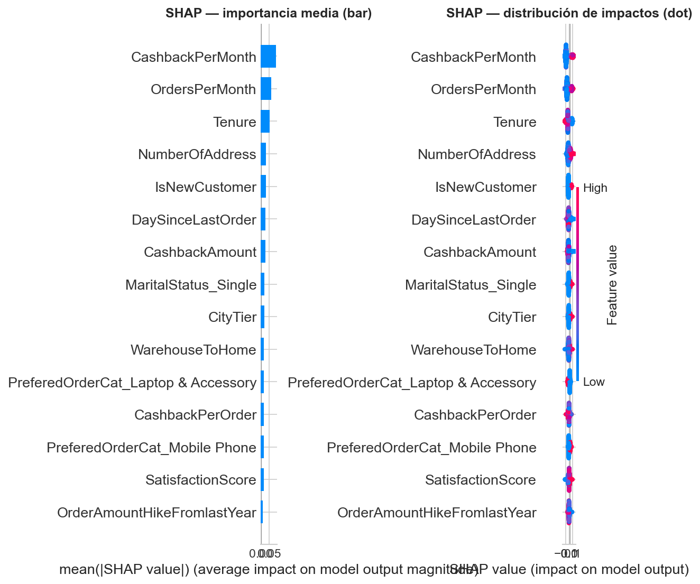

Inteligencia Artificial Aplicada a Negocios
TP Final — Licenciatura en Negocios y Tecnología
Primer Cuatrimestre 2026
Bautista Ríos · Tomás Attas · Agustín Venutolo
Junio 2026
El problema
"¿Podemos detectar quiénes están por irse antes de que dejen de comprar?
¿Por qué nos dejan?"
17%
de la base churneó el año pasado
(945 clientes de 5,630)
Adquirir un cliente nuevo cuesta 5-7× más que retener uno existente.
Cada churner no detectado = costo de adquisición + valor recurrente perdido.
Los datos
| Atributo | Valor |
|---|---|
| Filas | 5,630 clientes (1 ID + 1 target + 18 features) |
| Target | Churn (1 = se fue, 0 = sigue activo) |
| Desbalance | 16.8% positivo / 83.2% negativo |
| Variables clave | Tenure, DaySinceLastOrder, Complain, CashbackAmount, SatisfactionScore |
| Calidad | 7 columnas con nulos 4-5% · 3 columnas con duplicados de categorías (CC/Credit Card, etc.) |
Con 16.8% positivo, la accuracy es una métrica engañosa: predecir siempre "no churn" da 83% de aciertos y detecta cero churners.
Análisis exploratorio
| # | Hipótesis | Resultado |
|---|---|---|
| H1 | Tenure bajo → churn | Confirmada 3.4m churn vs 11.5m activos |
| H2 | Complain → churn | Confirmada con ⚠ leakage |
| H3 | Inactividad → churn | REFUTADA relación invertida |
| H4 | Baja satisfacción → churn | CONTRAINTUITIVA score más alto en churners |
| H5 | Bajo cashback → churn | Confirmada $160 vs $181 |
| H6 | Single → churn | Confirmada 26.7% vs 11.5% Married |
Lo más interesante son H3 y H4: hipótesis que parecían obvias pero los datos las cuestionaron. Investigamos por qué.
Cuestionar al modelo

La inversión es real pero engañosa. Los clientes nuevos (Q1 de Tenure) churnean al 50% y por construcción tienen pocos días sin comprar. Al mezclar todos los tenures, la mediana del grupo churneado se inclina hacia "compra reciente" — pero no es la recencia lo que predice, es Tenure + interacción con Complain.
Feature engineering

Criterio escrito ANTES de ver resultados: MI ≥ 0.005 + redundancia ≤ 0.85 + lift en CV.
Solo OrdersPerMonth y CashbackPerMonth pasaron las 3 puertas.
Hallazgo retrospectivo: estas 2 features quedaron #1 y #3 en feature importance del modelo final. El protocolo de exploración funcionó.
Disciplina anti-leakage
Auditoría de la variable Complain: no podemos confirmar si la queja se registra antes o después del churn. Postura conservadora: dropeamos Complain del modelo final. Audit cuantitativo: gap de Recall solo +0.79%, no compensa el riesgo.
Cuál modelo elegir

| Modelo | Recall CV | Notas |
|---|---|---|
| DummyClassifier | 0.0000 | Predice siempre "no churn" — accuracy 83%, Recall 0% |
| DecisionTree | 0.7652 | Interpretable pero 8 pts por debajo |
| RandomForest | 0.8431 | Ganador — mejor Recall + menor varianza |
| XGBoost | 0.8338 | Cerca pero mayor varianza entre folds |
No me conformé con la primera respuesta
| Ronda | n_iter | Resultado RF | Por qué seguí |
|---|---|---|---|
| Original | 30 | +1.88% (debajo del 2%) | Auditoría: 3/4 best_params pegados a boundaries |
| V1 expanded | 100 | +2.34% (✅ supera 2%) | Pero XGB con config sospechosa (n_est=50 al piso) |
| V2 narrow | 50 | +2.19% (estable) | Confirma V1, XGB se estabilizó. Plateau en iter 27 ✅ |
Medí gap train-CV de todas las configs:
| Config | Recall CV | Gap train-CV |
|---|---|---|
| RF default | 0.8431 | +0.1569 |
| RF V1 tuneado | 0.8629 | +0.1371 ← mejor |
Todos los tuneados overfittean MENOS que los defaults. El miedo a max_depth alto no se materializó — el ensemble compensa.
La métrica
Class imbalance: 83/17. Un modelo que diga "nadie churna" tiene 83% accuracy... y detecta cero churners.
Accuracy en problemas desbalanceados miente: hace sentir genio mientras el modelo es inútil.
Perder un churner = costo de adquirir uno nuevo (5-7× más caro).
Falsa alarma = un email innecesario o un cupón a alguien que no lo necesitaba.
Costo de FN ≫ Costo de FP.
Decisión: optimizar Recall (de los que se van, ¿a cuántos detectamos?) aunque baje Precision (de los que predijimos churn, ¿cuántos eran reales?).
Performance final en test

| Métrica | Valor |
|---|---|
| Recall | 95.3% |
| Precision | 81.2% |
| F1 | 87.6% |
| PR-AUC | 0.961 |
| AUC-ROC | 0.992 |
En negocio:
Sobre 190 churners reales en el test set, el modelo detectó 181.
De cada 10 alertas, 8 son reales.
Qué predice churn

1. La tasa mensual de actividad relativa a la antigüedad es el predictor más fuerte (#1 y #3 en importance).
2. Los primeros 3 meses concentran el riesgo (~50% churn vs <10% en clientes viejos).
3. La regla "email a 15 días sin compra" NO se sostiene — el verdadero patrón es "compra reciente + queja sin resolver".
4. La satisfacción auto-reportada NO predice churn — score más alto en churners (3.4 vs 3.0).
Acciones para el equipo comercial
| Acción | Plazo | Responsable | Impacto medible |
|---|---|---|---|
| A. Reorientar campañas hacia tasa mensual de actividad | 30 días | Marketing Retención | ≥85% Recall en alertas |
| B. Atención one-on-one para nuevos (≤3m) con queja | Inmediato | Customer Success | Reducir churn de 39% a 25% |
| C. Programa onboarding 90 días estructurado | 90 días | CS + Producto | Reducir churn de nuevos de 50% a 30% |
| D. Dejar de usar score de satisfacción como gatillo | 30 días | Analytics | Ahorro de campañas mal dirigidas |
Verbo + objeto + impacto + responsable + plazo. Nada genérico, nada de "mejorar la experiencia del cliente".
Honestidad
Complain (dataset público, no hay equipo de datos accesible)
Material complementario disponible en el repo: github.com/tattas21/churn_tp
Notebooks, decisiones documentadas, reporte ejecutivo PDF.